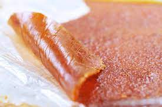

Fruit leather

A sweet snack to enjoy any time
Make your own fruit leather out of apples and pears
Ingredients
- 1 cup sugar
- ¼ cup lemon juice
- 4 cups peeled, cored and chopped apple or pears
Steps
- Preheat the oven to 150 degrees F (65 degrees C). Cover a baking sheet with a layer of plastic wrap or parchment paper.
- In the container of a blender, combine the sugar, lemon juice, apple and pear. Cover and puree until smooth. Spread evenly on the prepared pan. Place the pan on the top rack of the oven.
- Bake for 5 to 6 hours, leaving the door to the oven partway open. Fruit is dry when the surface is no longer tacky and you can tear it like leather. Roll up on the plastic wrap and store in an airtight jar.
return